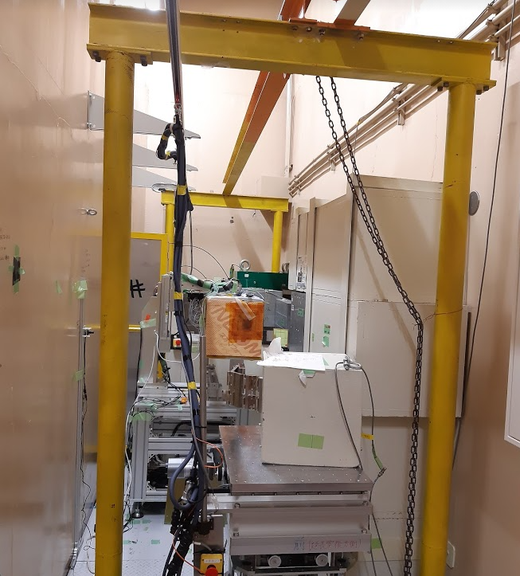

|
| Figure 1: ATLAS detector (from ATLAS experiment webpage). |
I am eager to understand properties of the elementary particles (in particular the Higgs boson), so I am doing my research as one of the collaborators of the ATLAS experiment. It is (together with its competitor the CMS experiment) the world's highest-energy particle physics experiment today, using collisions of protons provided by the Large Hadron Collider (LHC). The LHC, located in 100-m deep underground near Geneva, Switzerland, is a huge proton accelerator with a diameter of nearly 9 km, and realises pp collision energy of 13 TeV (and will be 14 TeV within a few years). The ATLAS detector, shown in Figure 1, is located at one of the collision points. It has a cylindrical shape with a diameter of 25 m and a length of 44 m, comprising of six different particle detector techniques. Exploiting the huge volume as well as the complex and precise particle detector systems, it efficiently detects tiny signals from high energy physical objects such as electrons, muons, pions, protons and neutrons produce directly in the pp collision, or via a decay of a massive particles like top quarks, Higgs boson and possibly a new elementary particle we have not discovered yet. In 2012, together with the CMS experiment, the ATLAS experiment declared discovery of the Higgs boson, which was the last missing piece of the Standard Model of elementary particle physics.
Since the experiment is huge and complex, it is impossible for one person or a group of several people to operate and maintain the detector system as well as a huge distributed computing system needed to process and store O(100 PB) data. It is therefore essential to collaborate with people from all over the world; about 2900 researchers and Ph.D students from nearly 180 countries / regions are working together by sharing individual works. Even though the collaboration is huge, professional works based on unique and original ideas by individual researches are essential to achieve important physics results. I am mainly working on the following topics in ATLAS.
 |
| Figure 2: Distribution of the di-τ invariant mass (Phys. Rev. D 9, 072001 (2018)). The small "excess" shown by the red line indicates the H → τ τ signal contribution. |
Physics research is of course important. The Higgs boson was indeed discovered, but this is not the end of exploration for elementary particles. Rather, in order to judge correctness of the (somewhat artificial) Higgs mechanism which is said to be an origin of mass, we must understand properties of the Higgs boson as precise as possible. Using abundant data collected by the ATLAS detector, equivalent to 10M Higgs bosons produced in the LHC, various production / decay processes of the Higgs boson have been observed in the past years. I am in particular focusing on a decay process where a Higgs boson decays into a pair of τ leptons (τ is a third-generation charged lepton). By determining a probability of the Higgs boson decaying into the τ-lepton pair, a Higgs-τ coupling, and ultimately a mechanism of the τ lepton acquiring a mass can be understood. The result can be compared with another measurement for a coupling of the Higgs boson with another fermion, for example, top quark or bottom quark (third-generation quarks).
In the previous result from the ATLAS experiment based on the data collected from 2015 to 2016 (Figure 2), a precision of about 20% was achieved. Now, by adding more data taken from 2017 to 2018, a factor of four larger dataset is available. In collaboration with other colleagues, I am aiming at much better precision in the Higgs-τ coupling measurement by applying a sophisticated machine-learning technique to separate signals from other background processes efficiently, as well as using the full dataset of the ATLAS experiment.
As of now, H → τ τ is only a measurable process where the Higgs boson couples with charged leptons. In a few years, H → μ μ channel is expected to observe. The H → μ μ channel is (being said) only a channel to probe a coupling of the Higgs to second-generation fermion at the LHC. Once it is achieved and the Higgs-τ coupling is measured as precise as possible by that time, it allows us to compare the couplings between the second and third generations. This will provide further understanding of mechanism of the mass generation to fermions.
| Figure 3: Hit efficiency of the SCT over 2018, demonstraing good performance above 99% overthe period (SCT-2019-002). |
In order to achieve excellent physics results, taking as much data as possible with high quality is essential. We, researchers, are responsible for operating our detector (while the accelerator is normally operated by accelerator researchers and engineers). Such a complex and huge system with 100 million readout channels, small problems frequently and inevitably show up during operation. In order to efficiently and effectively handle the issues, every researcher has their own role (maintaining and operating one of the subsystems comprising the ATLAS detector), and responsible for handling issues during data-taking for 24/7 (with sharing roles with many other experts, but it is also true that in some cases one needs to answer the phone call even after midnight, and rush to the control room as quickly as possible to solve the problem if it is serious).
Since 2018, I am an expert of the Semiconductor Tracker (SCT), which is made of silicon-based charged particle detector and is second innermost subsystem. The SCT is therefore important to detect charged particles, and measure their momenta precisely. The year 2018 was the last data-taking year of the second LHC/ATLAS operation period (2015-18; often called "Run 2"). In that year, I contributed to the efficient SCT operation (as a deputy run coordinator in the second half of this year), where the SCT operation team achieved 99.9% efficiency in terms of the operation time.
In 2019, the LHC/ATLAS entered a long shutdown period (LS2) for machine/detector upgrade. During this periods, broken parts and ageing devices are being replaced to be prepared for Run 3, starting in 2022 for another three years. Besides, for the SCT, It is also important to understand performance of the detector in detail, because silicon sensors have been heavily damaged by intense radiation in the past 10 years of operation. I have been leading performance study activities (as well as on-site detector works until June 2020 as run coordinator) during LS2. Here, abundant data taken during Run 2 as well as additional data from SCT-dedicated tests and measurements help precise measurements for key parameters, such as hit efficiency, noise, leakage current and so on. All results strongly support that conditions of the SCT are mostly as predicted in the construction period of the SCT, and therefore it can safely run until the end of Run 3.
|  |
| Figure 4: CYRIC beamline and our test devices for the proton irradiation test. |
At the end of Run 3 in 2024, the SCT will complete its 15-year mission, and be replaced by a new silicon tracker called "ITk" in 2025-26 for high luminosity operations of the LHC starting in 2027. I am in particular in charge of the outer sensors, which have strip readout channels like the SCT. It is a tremendous silicon tracker system, having a diameter of ~2 m (it was 1.2 m for SCT), and comprising of 20,000 silicon sensors (8196 for SCT). In order to assure only good silicon sensors to be used for module production (module is a unit consisting of a silicon wafer and signal readout and processing circuits), it is essential to inspect characteristics of all silicon sensors beforehand. We call this process "quality control (QC)" for inspection on all sensors, and "quality assurance (QA)" for more detailed inspection on sampled sensors for radiation hardness.
Since this mission is extremely challenging requiring a lot of resources, tasks are shared with different institutes in UK, Spain, Czechia, Slovenia, Canada, US as well as Japan. I am leading the QC/QA activities in Japan, where we are in charge of ~6000 wafers. In particular, QA tests with irradiated silicon sensors are more important tasks of us, because irradiation tests need to be performed. At CYRIC of Tohoku University, we occasionally irradiate 70-MeV protons onto the sample wafers (up to 1.6 × 1015 1-MeV-equivalent neutrons/cm2; as expected in the 10-year operation of HL-LHC ATLAS), and measure key parameters that would determine performance of the ITk as a charged particle tracker. In order to efficiently and reliably perform the measurement, together with our colleagues, I established an automated test system. It is now ready to receive massive number of sensors in main sensor production, that is going to start in this year.
 |
| Figure 5: Summary of B → D(*) τ ντ measurements as of Spring 2019 by HFLAV. Belle 17 corresponds to the result I led. |
For my Ph.D, I was working on the Belle experiment, which accumulated the world's largest dataset (integrated luminosity of >1000 fb-1) during the operation period spanning 1999 to 2010. This experiment provided a unique opportunity on studying properties of B mesons (composed of a b-quark and an anti-u or d quark), and possibly observing a quantum effect from an unknown heavy particle as a slight deviation in measured quantities (such as a branching ratio) with respect to expectations from the Standard Model. In particular, as of 2015, the branching ratio of B → D* τ ντ showed a 3.3σ deviation from the theoretical prediction. In the previous measurements, the τ → ℓ νℓ ντ decays were chosen to exploit the existence of one charged lepton as a distinctive signature from the background hadronic B meson decays. However, I proposed and developed an independent method using τ → π ντ and ρ ντ. Using the different final state, the deviation of 3.3σ was able to be investigated with different systematic uncertainties. An additional interest of this study was to measure polarization of the τ lepton, which was sensitive to non-vector type heavy bosons which were not yet discovered. Despite these physics interests, this measurement had not been performed yet due to difficulties in the estimation for the background hadronic B decays arising from the complicated hadronization process. I eventually achieved the challenging measurement by developing several important analysis methods.
Figure 5 summarises the current status of B → D(*) τ ντ studies, summarised by the Heavy Flavour Averaging Group (HFLAV). It is remarkable that all results show values larger than the Standard Model expectation, and the deviation around 3σ remains. Because the Belle II experiment is ramping up its data-taking, aiming at 50 times larger statistics than the Belle experiment collected, this anomaly will be solved in several years. If this is confirmed as a deviation due to an unknown new physics effect, the corresponding new elementary particle must be searched at energy-frontier experiments. This motivated me to change the field from luminosity-frontier to energy-frontier.